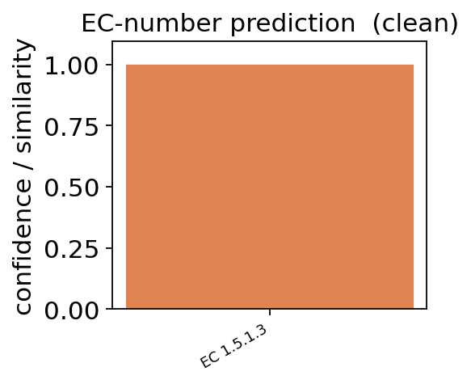
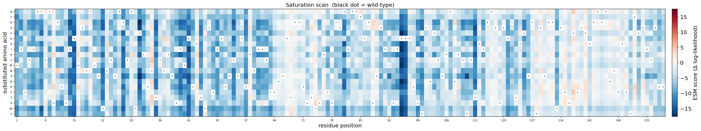
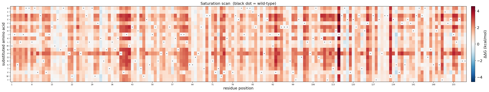
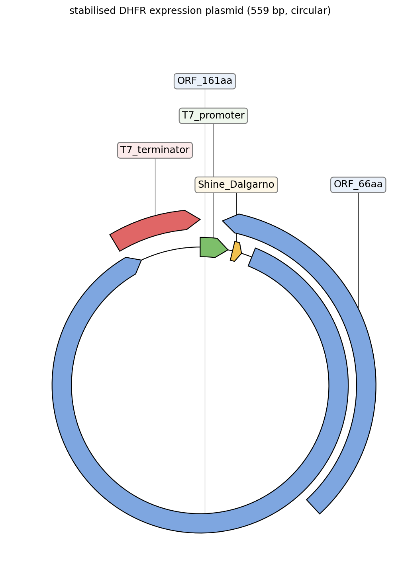
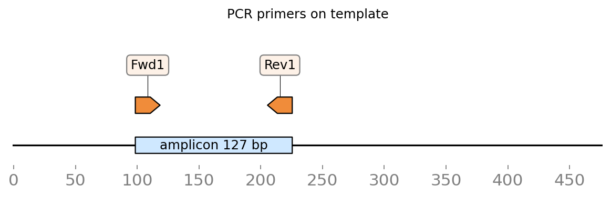

Case study II — engineering a more thermostable DHFR#
Dihydrofolate reductase (DHFR, the folA gene product) is one of the most-studied enzymes in biology: essential for nucleotide synthesis, the target of the antibiotic trimethoprim and the anticancer drug methotrexate, and a classic model for protein engineering and directed evolution. A recurring goal is a more thermostable variant — a more robust biocatalyst that tolerates process conditions without losing activity.
This case runs that protein-engineering campaign end-to-end with ov.synbio on the real E. coli DHFR sequence (UniProt P0ABQ4, 159 aa), using the real SOTA models throughout: confirm function → fold it → map the fitness & stability landscapes → design stabilised variants → the DNA to build them.
Runs on a GPU (ESMFold / ESM / ProteinMPNN / ThermoMPNN). pip install 'omicverse[synbio]'.
import omicverse as ov
ov.plot_set()
# the real E. coli DHFR (folA) sequence, UniProt P0ABQ4
DHFR = ('MISLIAALAVDRVIGMENAMPWNLPADLAWFKRNTLNKPVIMGRHTWESIGRPLPGRKNIILSSQPGTDDRVTWVKSVDE'
'AIAACGDVPEIMVIGGGRVYEQFLPKAQKLYLTHIDAEVEGDTHFPDYEPDDWESVFSEFHDADAQNSHSYCFEILERR')
print('DHFR length:', len(DHFR), 'aa')
🔬 Starting plot initialization...
🧬 Detecting GPU devices…
✅ NVIDIA CUDA GPUs detected: 1
• [CUDA 0] NVIDIA H100 80GB HBM3
Memory: 79.1 GB | Compute: 9.0
____ _ _ __
/ __ \____ ___ (_)___| | / /__ _____________
/ / / / __ `__ \/ / ___/ | / / _ \/ ___/ ___/ _ \
/ /_/ / / / / / / / /__ | |/ / __/ / (__ ) __/
\____/_/ /_/ /_/_/\___/ |___/\___/_/ /____/\___/
🔖 Version: 2.2.1rc1 📚 Tutorials: https://omicverse.readthedocs.io/
✅ plot_set complete.
DHFR length: 159 aa
1 — Confirm the enzyme’s function (CLEAN)#
Before engineering, verify what we have. enzyme_function(method='clean') runs the real trained CLEAN model against ~5,200 SwissProt EC cluster centres — it should return DHFR’s EC number, 1.5.1.3.
ec = ov.synbio.enzyme_function(DHFR, method='clean', verbose=False)
print('CLEAN EC prediction:', ec.predictions[:2], ' (DHFR = EC 1.5.1.3)')
ov.synbio.plot_ec_prediction(ec)
None
CLEAN EC prediction: [('1.5.1.3', 0.9937)] (DHFR = EC 1.5.1.3)
{kind=link}

2 — Fold it with ESMFold#
predict_structure folds the sequence with ESMFold (no MSA). DHFR is a well-folded α/β enzyme, so mean pLDDT is high. We keep the PDB for the stability step and view it in interactive 3D.
pred = ov.synbio.predict_structure(DHFR, out_path='dhfr.pdb')
print('mean pLDDT =', round(pred.mean_plddt, 1), '| device =', pred.device)
ov.synbio.view_structure(pred)
[ov.synbio.predict_structure] device=cuda (NVIDIA H100 80GB HBM3, 79 GB) len=159
[ov.synbio.predict_structure] done: mean pLDDT=94.3
mean pLDDT = 94.3 | device = cuda
3Dmol.js failed to load for some reason. Please check your browser console for error messages.
<py3Dmol.view at 0x7ef500a1b880>
3 — Fitness landscape: which positions tolerate change? (ESM-1v)#
variant_effect runs a zero-shot saturation scan with ESM-1v. The heatmap shows conserved (blue) positions — likely catalytic / structural, don’t touch — versus tolerant (red) positions where mutations are candidates. This is the in-silico deep-mutational-scan that guides where to engineer.
dms = ov.synbio.variant_effect(DHFR, model='esm1v')
print('scored', len(dms), 'substitutions; most-tolerated:', dms.iloc[0]['mutation'])
ov.synbio.plot_variant_effect(dms)
None
[ov.synbio.variant_effect] model=esm1v scoring=masked-marginals device=cuda (NVIDIA H100 80GB HBM3, 79 GB)
scored 3021 substitutions; most-tolerated: N34L
{kind=link}

4 — Stability landscape: find thermostabilising mutations (ThermoMPNN)#
For thermostability specifically, stability_ddg(method='thermompnn') runs the real trained ThermoMPNN model on the folded structure — calibrated ΔΔG in kcal/mol for every point mutation. Negative ΔΔG = stabilising. These are the mutations that make DHFR more robust; we rank them.
ddg = ov.synbio.stability_ddg('dhfr.pdb', method='thermompnn')
stabilising = ddg.sort_values('ddg').head(8) # most negative = most stabilising
print('top predicted thermostabilising single mutations (ΔΔG kcal/mol):')
print(stabilising[['mutation', 'ddg']].to_string(index=False))
ov.synbio.plot_variant_effect(ddg)
None
[ov.synbio.stability_ddg] pdb=dhfr.pdb method=thermompnn device=cuda (NVIDIA H100 80GB HBM3, 79 GB)
top predicted thermostabilising single mutations (ΔΔG kcal/mol):
mutation ddg
S135I -1.237436
S135V -1.111658
K32W -1.016983
K32C -0.939094
E154I -0.879996
E154V -0.876792
K32Y -0.861735
T123I -0.827052
{kind=link}

5 — Design a stabilised variant#
Combine the top stabilising mutations (ThermoMPNN) — keeping only those the ESM fitness landscape also tolerates, to avoid wrecking activity — into a candidate multi-mutant. We accept a mutation only if it is stabilising and its ESM variant-effect score isn’t strongly negative.
esm = dms.set_index('mutation')['score'].to_dict()
picked, used_pos, seq = [], set(), list(DHFR)
for _, r in ddg.sort_values('ddg').iterrows(): # most stabilising first
if r['ddg'] >= 0: # keep only stabilising (ddG < 0)
break
if r['pos'] in used_pos or esm.get(r['mutation'], 0) < -2.5: # 1/position, skip ESM-disfavoured
continue
picked.append(r['mutation']); used_pos.add(r['pos']); seq[int(r['pos']) - 1] = r['mut']
if len(picked) >= 5:
break
variant = ''.join(seq)
tot = sum(ddg.set_index('mutation').loc[m, 'ddg'] for m in picked)
print('designed stabilising variant:', ' + '.join(picked))
print(f'predicted total ddG: {tot:.2f} kcal/mol ({len(picked)} mutations, ESM-tolerated)')
designed stabilising variant: S135I + E154I + T73I + A117L + Q102L
predicted total ddG: -4.50 kcal/mol (5 mutations, ESM-tolerated)
6 — Sanity-check the design with ProteinMPNN#
Does the folded scaffold still “want” these residues? inverse_design (ProteinMPNN) samples sequences for the DHFR backbone; a good stabilising design should not stray far from what the structure prefers (native recovery stays high).
designs = ov.synbio.inverse_design('dhfr.pdb', num_sequences=4)
print('ProteinMPNN native score:', round(designs[0].score, 3),
'| best resampled design score:', round(designs[1].score, 3))
[ov.synbio.inverse_design] method=proteinmpnn backbone=dhfr.pdb device=cuda (NVIDIA H100 80GB HBM3, 79 GB) n=4
ProteinMPNN native score: 1.395 | best resampled design score: 0.742
7 — Build it: codon-optimize the variant + primers#
Order the stabilised DHFR variant as a synthetic E. coli-optimised gene with cloning primers.
var_dna = ov.synbio.codon_optimize(variant, host='e_coli').sequence
# assemble the stabilised-DHFR expression cassette and view it as a plasmid map
cassette = ('TAATACGACTCACTATAGG' + 'AAAGGAGGACAACAT' + var_dna
+ 'CTAGCATAACCCCTTGGGGCCTCTAAACGGGTCTTGAGGGGTTTTTTG')
print('stabilised-DHFR cassette:', len(cassette), 'bp')
ov.synbio.view_construct(cassette, circular=True, title='stabilised DHFR expression plasmid')
None
stabilised-DHFR cassette: 559 bp
{kind=link}

# cloning primers for the variant gene, drawn as binding arrows on the template
primers = ov.synbio.design_primers(var_dna)
print('cloning primers:', primers[0])
ov.synbio.view_primers(var_dna, primers[0])
None
cloning primers: PrimerPair(product=127bp, Tm=60.0/60.0, L=AACACCCTGAACAAACCGGT, R=TCACCCAAATCACGCGATCA)
{kind=link}

Summary#
On the real E. coli DHFR we ran a complete protein-engineering campaign with the SOTA models: confirmed its function (CLEAN → EC 1.5.1.3), folded it (ESMFold), mapped the fitness landscape (ESM-1v saturation scan) and the stability landscape (ThermoMPNN ΔΔG), designed a multi-mutant stabilised variant by combining the most stabilising mutations that ESM also tolerates, sanity-checked it against the ProteinMPNN sequence preference, and produced the codon-optimised gene + primers to build it.
Every model here is the real, published tool — swap method=/model= to try alternatives, and see Case I for the metabolic-engineering counterpart.